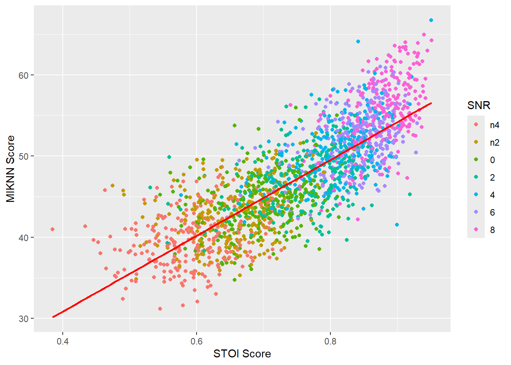

The following package(s) will be installed:
- ggpmisc [0.6.1]
- stringdist [0.9.14]
- tidyverse [2.0.0]
These packages will be installed into "~/CSE3000/praat_env/code/cse3000_quatro/renv/library/windows/R-4.4/x86_64-w64-mingw32".
# Installing packages --------------------------------------------------------
- Installing tidyverse ... OK [linked from cache]
- Installing stringdist ... OK [linked from cache]
- Installing ggpmisc ... OK [linked from cache]
Successfully installed 3 packages in 0.1 seconds.
library("tidyverse")
── Attaching core tidyverse packages ──────────────────────── tidyverse 2.0.0 ──
✔ dplyr 1.1.4 ✔ readr 2.1.5
✔ forcats 1.0.0 ✔ stringr 1.5.1
✔ ggplot2 3.5.1 ✔ tibble 3.2.1
✔ lubridate 1.9.4 ✔ tidyr 1.3.1
✔ purrr 1.0.2
── Conflicts ────────────────────────────────────────── tidyverse_conflicts() ──
✖ dplyr::filter() masks stats::filter()
✖ dplyr::lag() masks stats::lag()
ℹ Use the conflicted package (<http://conflicted.r-lib.org/>) to force all conflicts to become errors
library("stringdist")
Attaching package: 'stringdist'
The following object is masked from 'package:tidyr':
extract
library("ggpmisc")
Loading required package: ggpp
Registered S3 methods overwritten by 'ggpp':
method from
heightDetails.titleGrob ggplot2
widthDetails.titleGrob ggplot2
Attaching package: 'ggpp'
The following object is masked from 'package:ggplot2':
annotate
prep_plot <-function(data) {ggplot(data=data, aes(x=stoi_score, y=sim_wcr, color =factor(snr, levels = snr_order)))}prep_stoi_miknn_plot <-function(data) {ggplot(data=data, aes(x=stoi_score, y=MIKNNScore2x, color =factor(snr, levels = snr_order)))}
p <-prep_stoi_miknn_plot(noq(filtered_data))p +geom_point() +labs(x="STOI Score", y="MIKNN Score", color="SNR") +geom_smooth(method ="lm", se =FALSE, formula = y ~ x, color ="red")

fit <-lm(data=noq(filtered_data), formula=MIKNNScore2x ~ stoi_score)summary(fit)
Call:
lm(formula = MIKNNScore2x ~ stoi_score, data = noq(filtered_data))
Residuals:
Min 1Q Median 3Q Max
-12.6294 -2.5808 -0.1361 2.4379 12.6245
Coefficients:
Estimate Std. Error t value Pr(>|t|)
(Intercept) 12.1761 0.4287 28.40 <2e-16 ***
stoi_score 46.6990 0.5660 82.51 <2e-16 ***
---
Signif. codes: 0 '***' 0.001 '**' 0.01 '*' 0.05 '.' 0.1 ' ' 1
Residual standard error: 3.745 on 3672 degrees of freedom
Multiple R-squared: 0.6496, Adjusted R-squared: 0.6495
F-statistic: 6808 on 1 and 3672 DF, p-value: < 2.2e-16
p <-prep_plot(filtered_data %sp%51)p +geom_point() +labs(x="STOI Score", y="Subjective Score (WCR)", color="SNR")